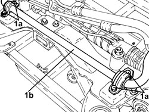
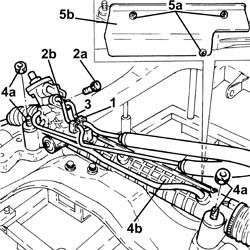
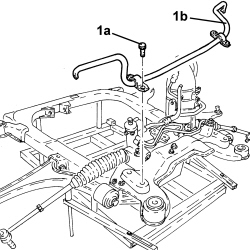
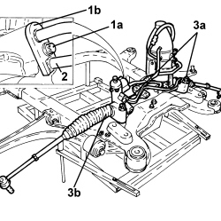

4130A15 POWER STEERING BOX R R WITH FRONT SUSPENSION FRAME REMOVED
- Path
- Procedures > 41 STEERING UNIT > 4130 POWER STEERING > 4130A POWER STEERING BOX > 4130A15 POWER STEERING BOX R R WITH FRONT SUSPENSION FRAME REMOVED
- Kind
- repair procedure (removal / refitting; the operation number is the code)
- Applies to
- all engines; all production periods
- Interactive page
- https://sloeber94.github.io/elrnDB-fCrm/en/#/194000530
Applies to: engines: 2.2; all production periods
 Removing
Removing
 Refitting
Refitting1. Undo the bolts (1a) and remove the anti-roll bar (1b) from the rear suspension frame.

Applies to: engines: 2.2; all production periods
1. Open the collar fastening the power steering system pipes to the power steering box.
2. Undo the bolt (2a) and disconnect the supply pipe from the pump to the power assisted steering box (2b), power steering pump side.
3. Disconnect the return pipe from the power steering box to the power steering fluid reservoir, power steering fluid side.
4. Undo bolts (4a) and remove the power steering box (4b) complete with heat shield.
5. Undo the bolts (5a) and remove the heat shield (5b) from the power steering box.

Applies to: engines: 2.2; all production periods
Refitting
Removing- Place the heat shield back in the power steering box and secure it using the bolts.
- Refit the power steering box complete with heat shield and secure by tightening the new bolts to the specified torque.
Component | Fastening | dia | Value (daNm) | Validity |
|---|---|---|---|---|
Power assisted steering box | Nut (to replace) | M12 | (chassis side) 4.1 - 5.0 + 45° |
- Replace the o-rings from the fittings of the disconnected power steering pipes.
- Connect the return pipe from the power steering box to the power steering fluid reservoir, power steering fluid side.
- Connect the supply pipe from the pump to the power assisted steering box, power assisted steering box side and tighten the bolt to the recommended torque.
Component | Fastening | dia | Value (daNm) | Validity |
|---|---|---|---|---|
Inlet/outlet pipes on power assisted steering box | Bolt | M8 | (power assisted steering box side) 1.0 - 1.2 |
- Close the collar fastening the power steering system pipes to the power steering box.
- Place the anti-roll bar in its housing in the front suspension frame and secure it by tightening the bolts to the recommended torque.
Component | Fastening | dia | Value (daNm) | Validity |
|---|---|---|---|---|
Front suspension anti-roll bar | Bolt | M8 | (chassis side) 1.8 - 2.2 |
Applies to: engines: 1.8, 1.9 JTD 8v, 1.9 JTD 16v, 2.4 JTD 20v; all production periods
Removing
Refitting1. Undo the bolts (1a) and remove the anti-roll bar (1b) from the rear suspension frame.

Applies to: engines: 1.8, 1.9 JTD 8v, 1.9 JTD 16v, 2.4 JTD 20v; all production periods
1. Undo the bolt (1a) and disconnect the supply pipe from the pump to the power assisted steering box (1b), power steering pump side.
2. Disconnect the return pipe from the power steering box to the power steering fluid reservoir, power steering fluid side.
3. Undo the bolts (3a) and remove the power steering box (3b).

Applies to: engines: 1.8, 1.9 JTD 8v, 1.9 JTD 16v, 2.4 JTD 20v; all production periods
Refitting
Removing- Position the power assisted steering box in its housing and secure it tightening the new bolts to the recommended torque.
Component | Fastening | dia | Value (daNm) | Validity |
|---|---|---|---|---|
Power assisted steering box | Nut (to replace) | M12 | (chassis side) 4.1 - 5.0 + 45° |
- Replace the O-rings on the power assisted steering pipe connectors disconnected.
- Connect the return pipe from the power steering box to the power steering fluid reservoir, power steering fluid side.
- Connect the supply pipe from the pump to the power assisted steering box, power assisted steering box side and tighten the connector to the recommended torque.
Component | Fastening | dia | Value (daNm) | Validity |
|---|---|---|---|---|
Inlet/outlet pipes on power assisted steering box | Bolt | M8 | (power assisted steering box side) 1.0 - 1.2 |
- Place the anti-roll bar in its housing in the front suspension frame and secure it by tightening the bolts to the recommended torque.
Component | Fastening | dia | Value (daNm) | Validity |
|---|---|---|---|---|
Front suspension anti-roll bar | Bolt | M8 | (chassis side) 1.8 - 2.2 |